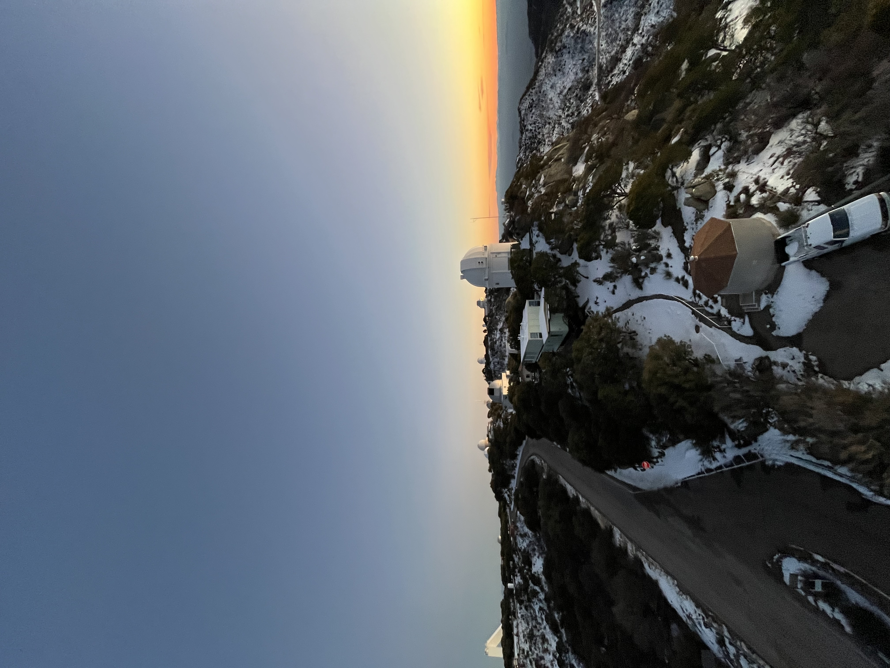
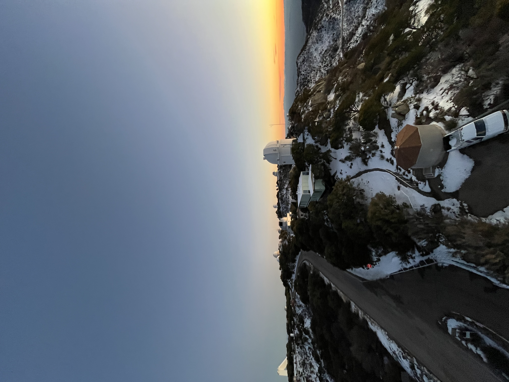

I am a computational/theoretical astrophysicist and 3rd year PhD student at Steward Observatory, at the University of Arizona. I have a B.A. in Physics and a minor in Computer Science from Northwestern University. I am passionate about science education, soccer, and music.
I currently work with Prof. Vasilis Paschalidis on simulating magnetohydrodynamic accretion onto binary black holes and uncovering their multi-messenger emission. I am part of the Theoretical Astrophysics Program (TAP) and the Transient Astrophysics group (SONATA) at the University of Arizona.
Previously, I was at the Center for Interdisciplinary Exploration and Research in Astrophysics (CIERA) at Northwestern University, where I worked with Prof. Sasha Tchekhovskoy on angular momentum transport mechanisms in magnetically arrested disks around spinning black holes.


 
